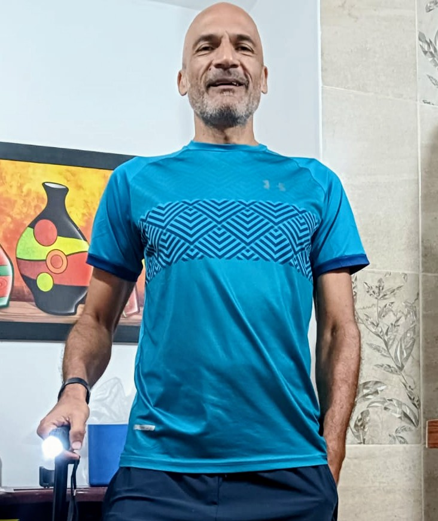

University Professor
Universidad de Antioquia. Facilitated practical learning and elevated the technical competencies of the next generation of engineers in the areas of Operating Systems, Networks, and Infrastructure.

Engineering & Project Management
Integrating technical, operational, and management capabilities in technological infrastructure.
Electronic engineer specializing in telecommunications, datacenter infrastructure, and digital transformation.
Professional Profile
I ensure operational continuity and technical success by planning, executing, and managing infrastructure and connectivity for datacenters and telecommunication networks. I have driven technological expansion by leading white space enablement projects in Colombia, Brazil, and Chile.
Additionally, I accelerate digital transformation by integrating my knowledge of Full Stack development, Azure, AWS, and Docker to build scalable technological solutions.
Career Path
Universidad de Antioquia. Facilitated practical learning and elevated the technical competencies of the next generation of engineers in the areas of Operating Systems, Networks, and Infrastructure.
INTERNEXA. Ensured high availability and performance by strategically administering physical datacenter infrastructure while strictly meeting established corporate SLAs and KPIs.
MER INFRAESTRUCTURA. Ensured the successful execution of regional projects through the efficient coordination of telecommunications and civil works teams, optimizing contract management.
IDT. Driven corporate growth by successfully implementing the new national telecommunications business unit, leading key negotiations and audits.
Skills
Azure & AWS, Digital Ocean, Docker, Nginx, Linux (Arch, Ubuntu, Mint), Python, HTML/CSS/JS, Datacenter Networks, Blockchain / DeFi.
Agile Methodologies, KPI / SLA Management, Team Leadership, Contract and Supplier Negotiation.
Academic Background
Universidad de Antioquia.
Esumer.
Universidad de Antioquia.
Spanish: Native
English: Professional (B1)
Portuguese: Basic